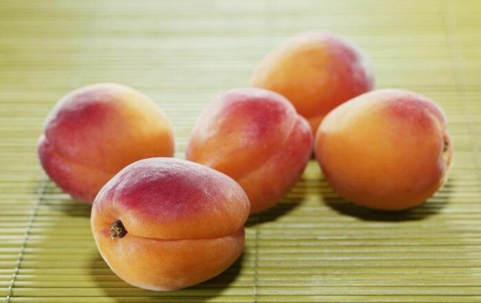

杏到底是伤人还是养人的水果？
一提起杏，我们第一时间就会浮现出那句老话“桃养人，杏伤人”，但其实这是杏被误解得最深的一次。杏不仅不伤人，而且还有它美妙的传说和独特的功效。
杏：我长这么可爱，可不是为了伤人来的
一、从杏花仙子到“杏满春林”
关于杏子，有这样两个比较有名的传说。
第一个是和著名的李广将军有关。
相传，西汉年间，李广将军率士兵西征。当时正值炎夏，连日赶路征战的将士们饥渴难忍。突然间空中飘来一阵杏子的香味，顺着香气李广将军抬头，看见两匹彩绸在空中飘然而下，便策马疾驰飞奔而去。可那彩绸却好像知道将军在追赶它，忽近忽远像在故意戏弄他。李广一怒之下拔出弓箭，其中一条彩绸应声而落。

接下来的景象惊呆了大部队，只见那片被射落的彩绸，变成一片整茂盛的杏树林，每棵树上都结满了杏。众将士们见状摘下杏子想要解渴，可那些杏子的味道却又苦又涩，李广一气之下将杏树林砍为平地，并下令将 士们在这片平地上就地宿营。
第二天一早，醒来的将士们又一次被震惊。只见昨天被砍得精光的杏树，枝繁叶茂黄灿灿的杏子又挂满枝头。李广见状忍不住摘下咬了一口，没想到这次的杏子竟然又甜又香。众将士看到李广吃杏时的表情，也都忍不住争先恐后地摘食起杏子。
吃过杏子的将士们，一扫前日的疲惫感觉精神倍增。原来，前一日天上的那两条彩绸，本是甜杏仙子和苦杏仙子，她们奉王母之命来解救李广。只因一时调皮两人互相嬉闹，却不想因此惹怒了李广，而射落了苦杏仙子。姐妹俩十分后悔，为了完成王母娘娘的嘱托，她俩趁众将士睡去之时施展仙术，将甜杏枝接在苦杏树上，最后终于结出了清香甘甜的杏子。
后来，李广将军把这香甜异常的杏树树种带到敦煌，人们为了纪念李广带来如此好吃的杏子，就把这种甜杏命名为“李广杏”。而且这种杏真的只有在敦煌本地嫁接培育，才能结出甘甜可口的杏子。
李广杏：怎么样，是不是看着就好想尝一口呀
上面就是杏子和名人李广的故事，而下面这个呢，则和东吴名医以及成语有关。
相传三国时东吴有一位名医名，医术高超，治病救人却向来都是免费的。为了报答名医的善举，很多患者病愈以后，就会来到名医家，在他家的周围悄悄栽上几株杏树。如此这般，几年之后，名医家周围的杏树竟然达到了十多万株，成了一片面积广大郁郁葱葱的杏林。“誉满杏林”、“杏林春满”这样称颂医生医术高超的成语就典出于此。时至今日，“杏林”在中医药界已经成为成为那些医术高超医者仁心的医生的雅称。
二、营养丰富，水果小天后
杏，是落叶乔木杏树的果实，又被称为甜梅、叭达杏、杏果、杏实、杏子。杏在中国有着悠久的历史，也是常见水果之一。杏子本身营养极为丰富，含有丰富的糖类、蛋白质以及钙、磷等矿物质、无机盐和微量元素。杏内含有的钙、磷、铁蛋白质等元素是所有水果中最多，胡萝卜素比苹果中的含量还要高，维生素的含量是除了枣和桔子之外最高的水果，可以堪称是水果中的小天后了。
其中所含的维生素A原、维生素C和B族维生素等，都对人体有着很好的补充保养作用。杏本性温热，并没有太强的攻击性，因此“杏伤人”一说确实有些委屈杏子了。因为其较温和的特性，杏子特别适合代谢速度慢、贫血、四肢冰凉的虚寒体质之人食用。而患有伤风、肺结核、痰咳、浮肿等病症者，经常食用杏也是大有裨益的。
杏子：我们的好处太多啦！
杏果、杏仁，经过消化分解，所产生的氢氰酸和苯甲醛等物质，还能起到防癌、抗癌、治癌的作用，长吃可起到延年益寿的功效；杏子中的钾和铁等微量元素，是十分重要的营养物质，能够维持人体神经和肌肉功能的强健和稳定性，从而达到保持血压平稳，维持体液平衡的功能。而新鲜杏子中的高含量维生素C，恰恰可以帮助人体吸收铁等重要微量元素。
 上一篇
上一篇